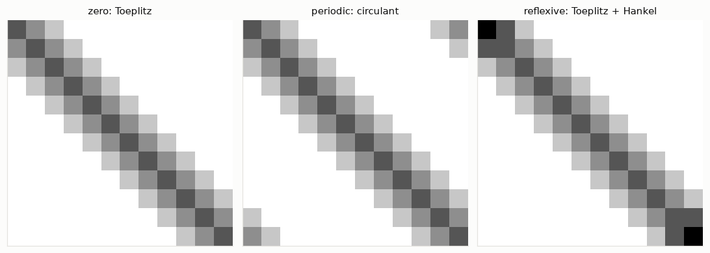
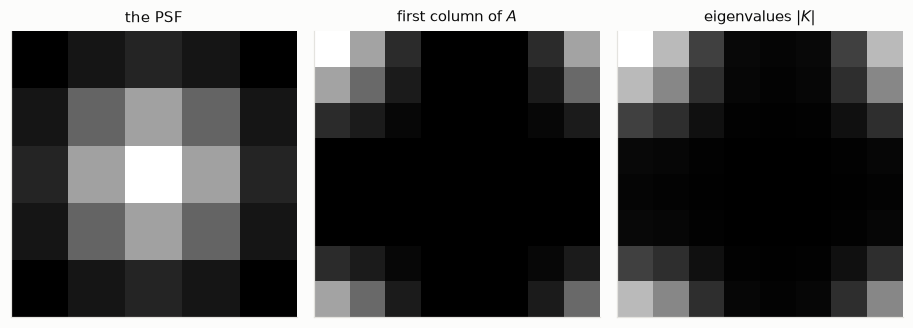
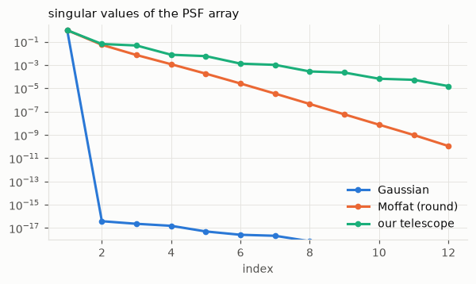
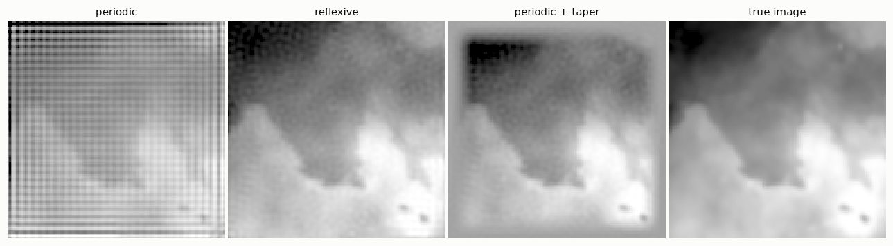

import numpy as np
from numpy.fft import fft, ifft, fft2, ifft2
from scipy import ndimage
from scipy.fft import dctn, idctn
import matplotlib.pyplot as plt
import hnotools as hno
hno.style()
rng = np.random.default_rng(0)
data = hno.load_sample()4 Structured computations
Companion notebook to Hansen, Nagy & O’Leary, Deblurring Images, chapter 4.
The blurring matrix of a megapixel image has \(10^{12}\) entries. This notebook is about never building it.
What you will take away
- Each boundary condition gives \(A\) a recognisable structure.
- Periodic boundaries: \(A\) is diagonalised by the Fourier transform (FFT).
- Reflexive boundaries with a symmetric PSF: \(A\) is diagonalised by the cosine transform (DCT).
- Separable PSF: \(A\) is a Kronecker product of two small matrices.
- Test data must be created without assuming your favourite boundary condition, or you will fool yourself.
4.1 One dimension: three boundary conditions, three structures
Take a signal of 12 samples and a kernel of 5. The matrix of the blur depends on what we assume beyond the two ends.
N = 12
kern = np.array([1.0, 2.0, 3.0, 2.0, 1.0]); kern /= kern.sum()
def matrix_1d(kern, N, mode):
"""Blurring matrix of a signal of length N: one column per sample."""
return np.column_stack([ndimage.convolve1d(np.eye(N)[j], kern, mode=mode) for j in range(N)])
T = matrix_1d(kern, N, 'constant') # zero boundary
C = matrix_1d(kern, N, 'wrap') # periodic boundary
R = matrix_1d(kern, N, 'reflect') # reflexive boundary
fig, ax = plt.subplots(1, 3, figsize=(10, 3.5))
for a, M, name in zip(ax, (T, C, R), ('zero: Toeplitz', 'periodic: circulant', 'reflexive: Toeplitz + Hankel')):
a.imshow(M, cmap='gray_r', vmin=0, vmax=0.5); a.set_title(name)
a.set_xticks([]); a.set_yticks([]); a.grid(False)
fig.tight_layout()
- Zero boundary. The same values along every diagonal: a Toeplitz matrix. Light that falls off the ends is lost.
- Periodic boundary. What leaves on one side comes back on the other: the diagonals wrap around the corners. Every row is the previous one shifted by one step, cyclically. This is a circulant matrix.
- Reflexive boundary. What would leave is folded back: the corners gain entries along the anti-diagonals. Constant anti-diagonals define a Hankel matrix, so this one is Toeplitz plus Hankel.
In two dimensions the same three structures appear block-wise; the book names them BCCB, BTTB and so on. The names matter less than what each structure buys.
4.2 Periodic boundaries: the FFT diagonalises \(A\)
Fact: every circulant matrix has the same eigenvectors, the complex sinusoids of the discrete Fourier transform. Its eigenvalues are the Fourier transform of its first column. Check both statements on \(C\):
eigvals_fft = fft(C[:, 0])
eigvals_num = np.linalg.eigvals(C)
print('eigenvalues from the FFT of the first column :', np.sort(eigvals_fft.real).round(4)[:6], '...')
print('eigenvalues from a general-purpose routine :', np.sort(eigvals_num.real).round(4)[:6], '...')
x = rng.random(N)
print('C x equals ifft( fft(c) * fft(x) ):', np.allclose(C @ x, ifft(eigvals_fft * fft(x)).real))eigenvalues from the FFT of the first column : [0. 0. 0.0595 0.0595 0.1111 0.1111] ...
eigenvalues from a general-purpose routine : [-0. 0. 0.0595 0.0595 0.1111 0.1111] ...
C x equals ifft( fft(c) * fft(x) ): TrueSo multiplying by \(C\) costs two FFTs instead of a matrix product, and solving \(C x = b\) costs the same: divide by the eigenvalues instead of multiplying.
In two dimensions nothing changes except that fft becomes fft2. The first column of \(A\), reshaped as an image, is the PSF with its centre moved to pixel (0, 0) and wrapped around the corners. Verify on an \(8 \times 8\) image, where we can still afford the \(64 \times 64\) matrix:
n = 8
psf = hno.gaussian_psf((5, 5), fwhm=2.5)
def matrix_2d(n, psf, mode):
A = np.zeros((n * n, n * n))
for j in range(n * n):
unit = np.zeros(n * n); unit[j] = 1.0
A[:, j] = ndimage.convolve(unit.reshape(n, n), psf, mode=mode).ravel()
return A
A_per = matrix_2d(n, psf, 'wrap')
first_column = A_per[:, 0].reshape(n, n) # PSF centred on pixel (0, 0), wrapped
K = fft2(first_column) # the n*n eigenvalues, as an n x n array
X = rng.random((n, n))
print('A x equals ifft2(K * fft2(X)):', np.allclose((A_per @ X.ravel()).reshape(n, n), ifft2(K * fft2(X)).real))
print('eigenvalues agree :', np.allclose(np.sort(np.linalg.eigvals(A_per).real), np.sort(K.real.ravel())))
fig, ax = plt.subplots(1, 3, figsize=(8.4, 2.9))
for a, im, name in zip(ax, (psf, first_column, np.abs(K)), ('the PSF', 'first column of $A$', 'eigenvalues $|K|$')):
a.imshow(im); a.set_title(name); a.set_xticks([]); a.set_yticks([]); a.grid(False)
fig.tight_layout()A x equals ifft2(K * fft2(X)): True
eigenvalues agree : True
This is precisely what hno.psf2otf computes, and what notebook 1 used without proof. The array \(K\) has a name in optics: the optical transfer function.
4.3 Reflexive boundaries: the DCT diagonalises \(A\)
Notebook 3 showed that the reflexive boundary condition is the least wrong of the three. It has its own fast transform, on one condition: the PSF must be symmetric in both directions (left-right and up-down). Then \(A\) is diagonalised by the two-dimensional discrete cosine transform, the real-valued cousin of the FFT.
The eigenvalues are obtained from the first column of \(A\) again, with one extra division: if \(e_1\) is the image with a single 1 in the top-left corner,
\[S = \frac{\mathrm{dct2}(A\, e_1)}{\mathrm{dct2}(e_1)} .\]
A_ref = matrix_2d(n, psf, 'reflect')
e1 = np.zeros((n, n)); e1[0, 0] = 1.0
dct2 = lambda a: dctn(a, type=2, norm='ortho')
idct2 = lambda a: idctn(a, type=2, norm='ortho')
S = dct2(ndimage.convolve(e1, psf, mode='reflect')) / dct2(e1) # no matrix needed
print('A x equals idct2(S * dct2(X)):', np.allclose((A_ref @ X.ravel()).reshape(n, n), idct2(S * dct2(X))))
print('eigenvalues agree :', np.allclose(np.sort(np.linalg.eigvalsh(A_ref)), np.sort(S.ravel())))A x equals idct2(S * dct2(X)): True
eigenvalues agree : TrueAt full size, with no matrix anywhere: blur a \(256 \times 256\) image with reflexive boundaries, then undo the blur exactly by dividing in the DCT domain. (No noise here; this only checks the algebra.)
x_true = data['hubble'].astype(float)
psf9 = hno.gaussian_psf((9, 9), fwhm=3.0)
b = ndimage.convolve(x_true, psf9, mode='reflect')
e1 = np.zeros_like(x_true); e1[0, 0] = 1.0
S = dct2(ndimage.convolve(e1, psf9, mode='reflect')) / dct2(e1)
x_back = idct2(dct2(b) / S)
print(f'smallest eigenvalue {np.abs(S).min():.1e}, relative error of the recovered image {hno.rel_error(x_back, x_true):.1e}')smallest eigenvalue 8.8e-07, relative error of the recovered image 3.7e-114.4 Separable blurs: Kronecker products
A PSF is separable when it is the product of a vertical profile and a horizontal profile: \(P = c\, r^{\mathsf T}\), a rank-one array. Blurring then splits into two independent 1-D blurs, columns first, rows next:
\[B = A_c\, X\, A_r^{\mathsf T},\]
where \(A_c\) and \(A_r\) are small 1-D blurring matrices, of the size of the image side. In vector form this is a Kronecker product. With NumPy’s row-by-row flattening,
\[\mathrm{vec}(A_c X A_r^{\mathsf T}) = (A_c \otimes A_r)\,\mathrm{vec}(X).\]
(The book flattens column by column and therefore writes \(A_r \otimes A_c\). Same mathematics, different bookkeeping.)
c = np.array([1.0, 4.0, 6.0, 4.0, 1.0]); c /= c.sum() # vertical profile
r = np.array([1.0, 2.0, 1.0]); r /= r.sum() # horizontal profile
P = np.outer(c, r) # a separable 5 x 3 PSF
Ac, Ar = matrix_1d(c, n, 'constant'), matrix_1d(r, n, 'constant')
A_sep = matrix_2d(n, P, 'constant')
print('A equals kron(Ac, Ar) :', np.allclose(A_sep, np.kron(Ac, Ar)))
print('A x equals Ac X Ar^T :', np.allclose((A_sep @ X.ravel()).reshape(n, n), Ac @ X @ Ar.T))
print('storage: A has', A_sep.size, 'entries; Ac and Ar together', Ac.size + Ar.size)A equals kron(Ac, Ar) : True
A x equals Ac X Ar^T : True
storage: A has 4096 entries; Ac and Ar together 128The gain is that everything about \(A\) follows from the two small matrices: its inverse, its singular value decomposition (notebook 5), and so its regularised solutions, for any boundary condition, at the cost of working on \(n \times n\) matrices instead of \(n^2 \times n^2\).
Is a given PSF separable? Compute its singular values: a separable PSF has exactly one that is not zero.
fmaj, fmin, pa, beta = data['sub_psf'][1]
candidates = {'Gaussian': hno.gaussian_psf((33, 33), 6.0),
'Moffat (round)': hno.moffat_psf((33, 33), 6.0, beta=2.5),
'our telescope': hno.moffat_psf((33, 33), fmaj, fmin, pa, beta)}
fig, ax = plt.subplots(figsize=(6.2, 3.2))
for (name, p), col in zip(candidates.items(), (hno.BLUE, hno.ORANGE, hno.AQUA)):
sv = np.linalg.svd(p, compute_uv=False)
ax.semilogy(np.arange(1, 13), sv[:12] / sv[0], 'o-', color=col, label=name, ms=4)
print(f'{name:15s} second singular value / first = {sv[1] / sv[0]:.1e}')
ax.set_ylim(1e-18, 3); ax.set_xlabel('index'); ax.set_title('singular values of the PSF array', loc='left'); ax.legend();Gaussian second singular value / first = 3.9e-17
Moffat (round) second singular value / first = 5.6e-02
our telescope second singular value / first = 6.6e-02
The Gaussian is separable to machine precision: that is a special property of the Gaussian, and one reason for its popularity. A Moffat PSF is not, and neither is the real PSF of our telescope, although one separable term already captures most of it. The book explains how to use the best rank-one approximation when the PSF is nearly separable.
4.5 Summary: which tool for which problem
| Boundary condition | Condition on the PSF | Structure of \(A\) | Fast tool |
|---|---|---|---|
| periodic | none | circulant blocks | FFT: fft2, ifft2 |
| reflexive | symmetric in both directions | Toeplitz + Hankel blocks | DCT: dctn, idctn |
| any | separable, \(P = c\,r^{\mathsf T}\) | Kronecker product | two small matrices |
| zero | general | Toeplitz blocks | none: iterative methods (notebook 9) |
In every fast case the pattern is the same three steps: transform the data, divide by the eigenvalues (with care: that is regularisation), transform back.
4.6 Realistic test data, and what to do at the edges
A warning before the experiments of the next notebooks. If you create test data by blurring an image with periodic boundaries and then deblur it assuming periodic boundaries, the edges are perfectly consistent and you will see no edge problem. Real pictures are not that kind. The honest recipe:
- blur an image larger than the one you will work with;
- cut out the central part, so that light really did come from outside;
- add noise.
def make_test_problem(big, psf, noise, margin=64, seed=1):
"""Blur a large scene, keep its centre, add noise. Returns (x_true, b)."""
inner = slice(margin, big.shape[0] - margin)
blurred = ndimage.convolve(big, psf, mode='reflect')[inner, inner]
return big[inner, inner], blurred + noise * np.random.default_rng(seed).standard_normal(blurred.shape)
psf17 = hno.gaussian_psf((17, 17), fwhm=4.0)
x_in, b_in = make_test_problem(data['hubble'].astype(float), psf17, noise=0.002)Now deblur this honest test problem three ways, each with the simple “truncated inverse” of notebook 1 (invert where the eigenvalue is larger than \(\tau\), zero elsewhere):
- assuming periodic boundaries, with the FFT;
- assuming reflexive boundaries, with the DCT;
- assuming periodic boundaries, after tapering the data: fading the image smoothly towards its mean value near the edges, so that the left edge matches the right one. This is what our project’s code does.
def truncated(coeffs, eig, tau):
out = np.zeros_like(coeffs)
keep = np.abs(eig) > tau
out[keep] = coeffs[keep] / eig[keep]
return out
def taper(b, width):
"""Fade the image to its mean over `width` pixels along every edge."""
ramp = np.ones(b.shape[0])
ramp[:width] = 0.5 - 0.5 * np.cos(np.pi * np.arange(width) / width)
ramp[-width:] = ramp[:width][::-1]
return b.mean() + (b - b.mean()) * np.outer(ramp, ramp)
tau = 0.05
m = x_in.shape[0]
big_psf = np.zeros((m, m)); big_psf[m//2 - 8:m//2 + 9, m//2 - 8:m//2 + 9] = psf17
K = hno.psf2otf(big_psf)
e1 = np.zeros((m, m)); e1[0, 0] = 1.0
S = dct2(ndimage.convolve(e1, psf17, mode='reflect')) / dct2(e1)
x_per = ifft2(truncated(fft2(b_in), K, tau)).real
x_ref = idct2(truncated(dct2(b_in), S, tau))
x_tap = ifft2(truncated(fft2(taper(b_in, 16)), K, tau)).real
core = slice(24, m - 24) # judge away from the edges
for name, xr in (('periodic', x_per), ('reflexive', x_ref), ('periodic + taper', x_tap)):
print(f'{name:17s} relative error: whole image {hno.rel_error(xr, x_in):.3f}, centre only {hno.rel_error(xr[core, core], x_in[core, core]):.3f}')
print(f'{"blurred data":17s} relative error: whole image {hno.rel_error(b_in, x_in):.3f}, centre only {hno.rel_error(b_in[core, core], x_in[core, core]):.3f}')
hno.show([x_per, x_ref, x_tap, x_in], ['periodic', 'reflexive', 'periodic + taper', 'true image'], same_scale=False, width=2.9);periodic relative error: whole image 0.232, centre only 0.091
reflexive relative error: whole image 0.015, centre only 0.011
periodic + taper relative error: whole image 0.172, centre only 0.010
blurred data relative error: whole image 0.014, centre only 0.014
Read the numbers together with the pictures.
- Periodic, untreated: ripples parallel to the edges invade the picture. They come from the jump between opposite edges, which the periodic model takes for a real feature of the scene and tries to “deblur”.
- Reflexive: the ripples are gone, at no extra cost. This is the right choice whenever the PSF is symmetric in both directions.
- Tapering sacrifices a frame around the picture and saves the centre. It works with any PSF.
Our telescope PSF is an ellipse tilted at an arbitrary angle. It is symmetric through its centre, but not left-right and up-down separately, so the DCT route is closed to us:
k = hno.moffat_psf((33, 33), fmaj, fmin, pa, beta)
print('symmetric through the centre :', np.allclose(k, k[::-1, ::-1]))
print('symmetric left-right :', np.allclose(k, k[:, ::-1]))
print(f'axis ratio {fmin / fmaj:.2f}, tilted by {pa:.0f} degrees')symmetric through the centre : True
symmetric left-right : False
axis ratio 0.87, tilted by 45 degreesThat is why the project works with the FFT and tapered edges, on images much larger than the PSF so that the sacrificed frame is cheap.
Your turn
- An asymmetric kernel. In section 4.1 replace the kernel by
[3, 2, 1, 0, 0] / 6. Which of the three matrices are still symmetric? Is the circulant one still diagonalised by the FFT? (Check as in 4.2.) - Why the first column? For the periodic case, explain in two sentences why knowing one column of \(A\) is knowing all of \(A\).
- Break the DCT. In section 4.3, replace
psfby a PSF shifted by one pixel (usenp.roll). Which of the two checks fails? Why does the FFT route not care? - Cost. Time
A_per @ X.ravel()againstifft2(K * fft2(X))forn = 8, 16, 32, 64with%timeit(build \(A\) only while you can afford it). Plot both on logarithmic axes. What exponents do you find? - Nearly separable. Compute the best rank-one approximation of the telescope PSF from its SVD and display the difference with the PSF itself. How large is the error relative to the peak?
- The inverse crime. In section 4.6, create the data with
ndimage.convolve(x_in, psf17, mode='wrap')instead ofmake_test_problem, and deblur with the periodic model. What do the numbers say now, and why should you not believe them? - Taper width. Try
taper(b_in, w)forw= 4, 8, 16, 32. What is the trade-off?